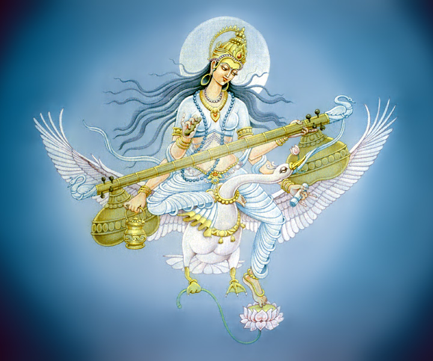

Сарасваті, головна для водійських аріїв річка, в давньоіндійській міфології і зображеннях Сарасваті постає в образі молодої жінки; як божество, вона вважалася покровителькою мистецтв, наук, богинею мудрості, творцем листи і алфавіту. В "Рігведі" Сарасваті присвячені три гімну, вона є найбільш шанованою рікою. Синдху називається матір'ю Сарасваті.
В "Рігведі" розповідається про царів і людей, що живуть по берегах Сарасваті. Вона благодатна, повноводна, стрімка; тече з гори до моря; її потік величчю перевершує всі інші води; вода її чиста, своїми хвилями Сарасваті руйнує гірські вершини. Вона семічленную, і у неї сім сестер, вона - мати потоків, найкраща з матерів, річок і богинь, дочка Павіру, блискавки і дружина героя Сарасваті. Сарасваті заповнює повітряний і всі інші простору. Її просять спуститися з неба, з великої гори і взяти участь в жертвопринесенні; вона називається асурської і божественної, що говорить про її небесне походження.
Сарасваті - очистительниця, вона лікує Індру, несе дари, їжу, потомство, життєву силу, безсмертя; згадується її груди і її молоко; вона створює тілесний плід і вона ж вбивця ворогів. У Сарасваті золота колісниця, вона багата кіньми, захищає співаків, пов'язана з поезією, вона - богиня священної мови. Не випадково, що вже в брахманів Сарасваті ототожнюється з богинею Вач, промовою, а в послеведійскій період взагалі стає богинею красномовства і мудрості, дружиною Брахми, изобретательницей санскриту і алфавіту деванагарі, покровителькою мистецтв і наук (підкреслюються краса, витонченість, простота, білизна Сарасваті) . У ведах Сарасваті пов'язана з чоловічим партнером Сарасваті, в текстах згадуються його запліднюючі води, він порівнюється з освіжаючим дощем; з Агні та Марута, з Индрой і Ашвинов, з Вадхрьяшвой, якому вона дарувала сина Діводасу. З богинею жертвоприносин Ілой і богинею співів Бхараті (іноді - з Махи і Хотрії) Сарасваті утворює тріаду, що сидить на жертовної підстилці.
У послеведійскую епоху зміна функцій і вигляду Сарасваті співвідноситься з появою нових сюжетних зв'язків. Сарасваті, дочка Дакши, зачаровує вартою небесної соми гандхарвов і виманює у них сому, сама ж йде до богів (в "Шатапатха-брахманів" цей сюжет пов'язаний з Вач). В інших випадках Сарасваті - дочка Брахми або його дружина; нарешті, пізніше її називають і дружиною Вішну, на підставі чого образ Сарасваті виявляє тенденцію до змішання з образом Лакшмі. У сюжеті "Рамаяни" про нашестя афгано на північ Сарасваті випрошує у Брахми сон для брата Равани Кумбхакарни. У текстах "Бріхаддхарма-пурана" синові Шиви Сарасваті підносить перо для письма та кольорові чорнила. Часто Сарасваті виступає під іншими іменами - Брахми, Бхараті, Шарада, Вагішварі, Путкарі. Відомі зображення Сарасваті в пам'ятках Елора.